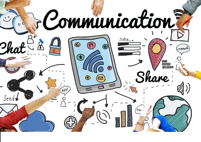

// page beginning
Welcome to the POB Communication project that is about the Issues at TCE's Communication.
we hope you enjoy
and by we, we mean Sage R., Zachary M., Alexander V. And Prince P.

Q // But what is Communication?
Communication is the process of which multiple people come
together to share thoughts and ideas.
Effective communication entails the proper exchange
of ideas without any barriers and confusion.
Q // and do we believe that Trinity College east has Effective Communication?
Yes, we believe that TCE (as a school) has effective communication.
Student’s can use Microsoft teams to message
their teachers when they’re not in school.
Teachers or students can come together to create a whatsapp
group to make communication easier among themselves.
Teachers are usually in staffrooms where teacher can be visited
by students during their breaks to get work they may have missed
or to hand in assignment that they haven’t submitted
The Public Announcement system,
as well as the monitor that are on the Block
and in the main Building, help to communicate the same message
to every student and teacher simultaneously.
//but do they use it is the better question...
Q // and what can hinder communication between the various member?
Some factors that can affect communication in TCE are age , gender and racism.
Q // Are there any barriers to communication at TCE?
We do not believe that there are any barriers of communication at TCE.
Q // well, how can we fix these issues?
Personalized Communication is more than just writing out a message is sending it out.
It involves infusing the voice with the audience.
Personalizing Communication will help Parents
and the school identify problem early on.
Personalized praises will motivate student to do better.
We were told by the principal that the school pays 750,000 Dollars yearly for PowerSchool.
The school could inform the parents of importance of using PowerSchool to help bridge the gap between home and school.
Allocation of budget towards communication training –
If parents don’t start using PowerSchool the school
can just stop paying for it and allocate the money towards communication
training. With better communication this will help students inform
teacher of their problems this will also help teachers to communicate
better with their students.
Building relationships – Strong relationships between students
and teachers may enhance students’ motivation and improve learning abilities.
Way to improve relationships are by teaching students in small groups
having social activities around student’s goals. Some ways to build
strong relationships with students are to make genuine attempts to get to know them.
You could spend time asking about their plans. What they did over the weekend and
encourage students to open. You can also discuss recent popular entertainment or trends.
Newsletters – Newsletters are letters send to stakeholders of the school to inform
them of activities going on in the school. A newsletter is a valuable tool in communication
to large groups. It will help to keep all stakeholders aware of what’s going on in the school.
Q // What do you think would be the best form of communication for TCE to adopt?
The best channel of communication i would recommend
for TCE is face to face because Face-to-face communication
is often more effective than written or audio-only conversations.
This is because seeing one another allows
us to pick up on nonverbal cues and body language
// Example( school rather face to
face to insure students
are paying attention in class ,
they would be able to read there body
language and it can also benefits the teacher
when it’s comes to participation in a class )
PROS :
In-person interaction allows for the observation of facial expressions, body language,
and gestures, providing additional layers of meaning and context to the conversation and Fast Feedback:
Real-time response to verbal and non-verbal cues allows for instant clarification and understanding during the conversation.
CONS :
In-person
meetings often require travel time, scheduling coordination, and may
take longer than virtual communication methods and
Face-to-
face communication is limited to individuals
who are physically present in the same location,
making it impractical for remote or
distributed teams.
// end of document